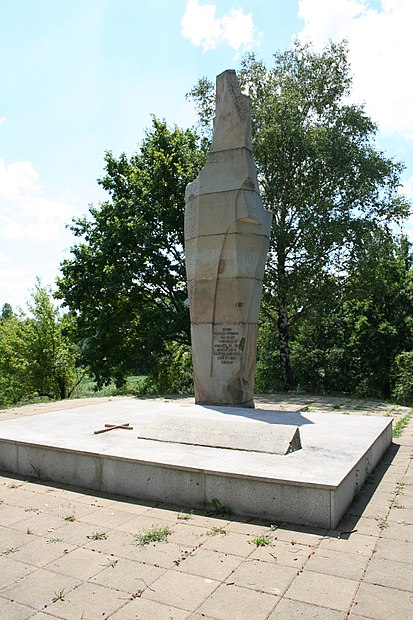

Zapadna Srbija
Regija je kompletan geografski prostor ,individualisana geografska celina koja se razlikuje od drugih susednih oblasti.Ona ima specifičnu strukturu koja je nastala
kao rezultat delovanja prirodnih i društvenih zakona.Kriterijumi za izdvajanje regija jesu njihov sadržaj,izgled i individualnost.Prema tome,regija je prostor
kompleksnog geografskog sadržaja i isprepletanog delovanja prirode i ljudi.
(Geografija,udžbenik za treći razred gimnazije,KLETT)
Srbija je podeljena na sedam regoinalnih celina,a ja ću pisati o regionu ZAPADNE SRBIJE I STAROVLAŠKO-RAŠKE VISIJE.Pošto postoje razne podele teritorije Republike Srbije kada se kaže samo zapadna Srbija misli se na ove dve regije.Postoji i podela na statističke regione-ove dve teritorije bi pripadala statističkom regonu Zapadne Srbije i Šumadije. Zbog toga sam ove dve regije o kojima ću pisati stavila pod zajednički naziv-ZAPADNA SRBIJA.
Položaj i prostiranje
Odvojeno ću prikazati ove dve regije ali shvatićete da se one nadovezuju jedna na drugu!
Zapadna Srbija se prostire imeđu Save na severu i Zapadne Morave na jugu,Drine na zapadu i Kolubare,Ljuga,Dičine na istoku.Čine je manje regije:Mačva,Pocerina,
Posavina,Valjevska Podgorina,Podrinje(Podrinje čine još manje celine-Jadar,Rađevina,Lešnica,Azbukovica).
Starovlaško-raška visija se prostire od reka Djetinje i Zapadne Morave na severu,do Kosova i Metohije i granice sa Crnom Gorom na jugu i jugozapadu.Zapadnu granicu čine
reka Drina i granica sa BiH a istočnu dolina Ibra.
Sada ću prikazati turistički bitne destinacije krećući se od severa ka jugu!
Planina Cer je jedna od najvažnijih istorijskih lokacija naše države.Pojam Cer i Iverak,kao obronak planine,vežu se za periode Prvog a potom i Drugog svetskog rata. Stradanje i pobeda kao dva suprotna pojma vezuju se za tetorije južno od planine Cer:Podrinje,Jadar...
U blizini granice sa Republikom Srpskom nalazi se grad i opština Loznica poznata po Jovanu Cvijiću,Vuku Karadžiću,Anti Bogićeviću. U blizini se nalazi Banja Koviljača u kojoj je smešten jedan od najboljih centara za rehabilitaciju.
Rodno selo Vuka Stefanovića Karadžića,selo Tršić,je poznato većini stanovnika Srbije!Sigurna sam da je i većina djaka bila barem jednom na ekskuziji ili izletu u Tršiću. Svakog septembra održava se svima poznata manifestacija-Vukov sabor!
U dolini reke Jadar,na oko 20 kilometara udaljenosti od Loznice,nalazi se varošica Draginac.U tom malom mestu je okupator 1941.godine streljao oko 3000 seljaka iz okolnih sela.U znak sećanja na zločine počinjene oktobra 1941.godine podignut je spomenik koji nosi tužno ime-Spomenik Kosturnica.Njegov izgled podseća na figuru čoveka u uspravnom položaju.Simbolika je očigledna!
Tokom Prvog i Drugog svetskog rata ovaj kraj je pretrpeo ogromne štete koje se ne mogu izmeriti rečima.Ovde su vodjene najvažnije borbe za oslobodjenje tadašnje države!
Nedaleko od varoši Krupanj,nalazi se pravi raj za ljubitelje prirode i uživanja,mesto Dobri potok.Tu se nalazi crkva Vaznesenja presvete Bogorodice,a sve je napravljeno od drveta i prirodnog kamena. Obezbeđen je veliki prostor za sedenje i roštiljanje.Tu se nalazi i veliki broj drvenih kućica,zanimljivog sadržaja,kao što su muzeji.
Dobri potok pripada oblasti koja se zove Rađevina,a južno od nje prostiru se Soklske planine,sledeće veoma bitno mesto!
Na planini se nalazi Soko grad!Soko grad je jedna od lokacija koju bih svim ljudima preporučila da posete;još uvek se nalaze ostaci tvrđave za koju se smatra da je sagradjena pre 1392.godine a srušena je tokom srpsko-turskih sukoba 1862.godine.Na vrhu stene nalazi se veliki krst do kog se može doći peške stmrim putevima, a doživljaj se ne zaboravlja.
Sokolska tvrđava je na naše iznenađenje podignuta u vazduh od strane Srba a razlog tome je taj što Srbi dugi niz godina nisu mogli da povrate ovu tvrđavu od Turaka!

Sada ću se osvrnuti na još jednu bitnu regiju,Valjevsku Podgorinu!Kraj prebogat istorijskim i kulturnim nasleđem!
Podgorina obuhvata gornji deo sliva reke Kolubare,Valjevske planine(Povlen,Maljen,Suvobor) i i Valjevsku kotlinu.
Valjevo,kao glavni grad je jedan od kulturno najbogatijih gradova u celoj državi.Ljude često na Valjevo i asocira pravilan izgovor i akcentovanje srpskog jezika i smatra se da Valjevci najpravilnije govore srpski jezik!Iz Valjeva i svih okolnih mesta koja ga okružuju su potekle neke od najpoznatijih ličnosti koje naša zemlja ima,i po kojima je poznata!Sada ću nabrojati samo neke od njih:Desanka Maksimović,cela porodica Nenadović,Milovan Glišić,vladika Nikolaj Velimirović,Nenad Jezdić,Miloš Teodosić...
Dovoljno je napomenuti da je nedaleko od Mionice,u mestu Struganik rodjen vojvoda Živojin Mišić.Struganik je mesto od važnog istorijskog značaja,gde su se tokom Drugog svetskog rata vodili bitni pregovori.
Poznate destinacije većine ekskurzija su Brankovina kod Valjeva,manastiri Lelić i Ćelije,Kula Nenadovića...
Takođe tu je i Muselimov konak,nezaobilazno mesto školskih ekskurzija!
Brankovina je pre svega poznata po slavnoj porodici Nenadović.Još je poznato da je u tom mestu sahranjena Desanka Maksimović!
U poznato odmaralište spada i planina Divčibare!
-Svim poznavaocima geografije,ali i drugih prirodnih disciplina i nauka poznato je selo Petnica,i lokalitet koji se nalazi kod Petničke pećine-naselje staro 6000 godina!Naravno i istraživačka stanica Petnica smeštena u istoimenom mestu.
Dolazmo do Starovlaško-raške visije!
Planina Tara se prostire iznad reke drine i turistički je veoma poznata.Zbog svoje lepote,raznovrsnog biljnog i životinjskog sveta proglašena je nacionalnim parkom!
Prelaz ka Zlatiboru čini Mokra gora,poznata po Šarganskoj osmici,Drvengradu...

Zlatibor je jedna od najpoznatijih turističkih destinacija u celoj zemlji odmah posle Kopaonika!Prostor je prelepo uređen i zaista raznovrstan! Preko uredjenog jezera u samom centru,poznate pijace,zlatiborskog sira i mesa ovaj kraj predstavlja pravi dragulj!Na žalost,svake godine je boravak tamo sve skuplji zbog velikog odziva bogatijih turista koji su primetili šta sve Zlatibor nudi!
Planina Zlatar je još i poznata po Zlatarskom jezeru!
Ove lokacije posećene su tokom svih godišnjih doba,a više reči biće u delu o seoskom turizmu;možete preći odmah ako kliknete ovde.
Penjemo se na sve veće nadmorske visine.U tome možemo pronaći čar zapadne Srbije,veliku raznovrsnost!Preko ravnica,brda,kotlina i klisura dolazimo na neke od najviših predela naše države.
Kako se krećemo južnije menja se i klima;za ljude koji žive u umereno-kontinentalnoj klimi ovi predeli predstavljaju pravi izazov!Pomenućemo Pešter-srpski Sibir,Goliju, Rašku!To su delovi nekadašnje stare Srpske države.Istorija srednjeg veka na našem dlanu!
Postoji još mnogo lokacija koje obuhvata zapadna Srbija!Kada pogledate kartu vidite koliku povšinu ona obuhvata tako da sada neću više pisati na ovu temu. Ako bih pisala o svim destinacijama zapadne Srbije,bila bi potrebna čitava knjiga!Neke lepote se čak ni ne mogu opisati rečima!
Čitajuči sajt Obidji Srbiju jedna od rečenica mi je ostala urezana u sećanju ,a to je da se za zapadnu Srbiju može reći da je Srbija u malom.To sam,za kratak vremenski period pisanja ove stranice ,mogla i da shvatim!